Posted July 1, 2025
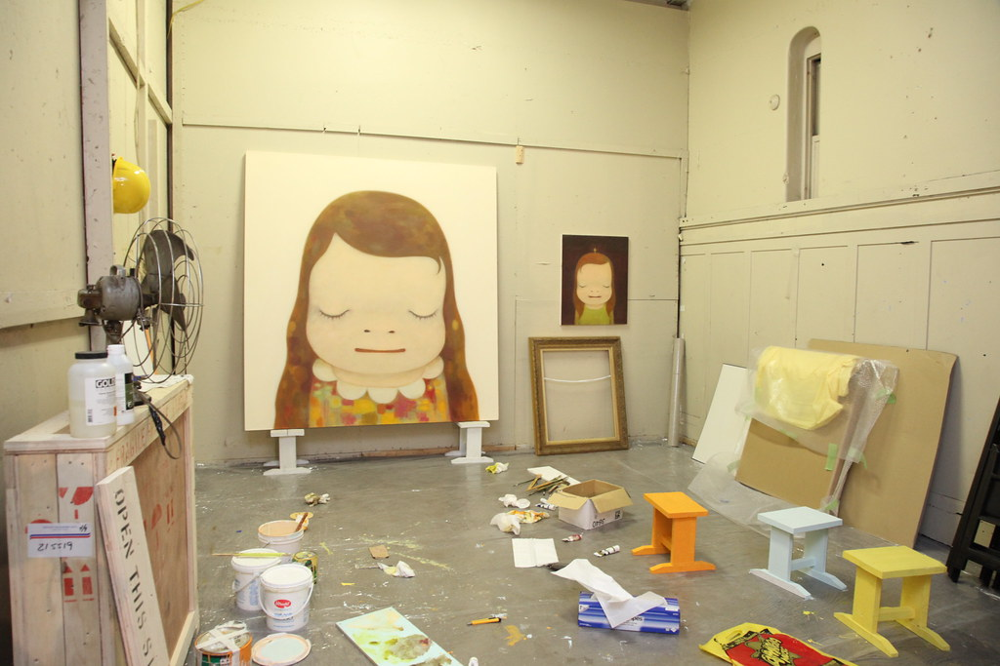“Yoshitomo Nara: Open Studio” by Asia Society, CC BY-NC-ND 2.0
Learn about trending artist Yoshitomo Nara and hear me reflect on my favorite of his works!
About four years ago, I spent a summer day visiting LACMA—this summer was the birth of my interest in art, as an injury took me out of my ridiculously intense practice schedule for club swim. Up to this point, swim had dictated every single aspect of my schedule, and I suddenly had to reckon with this terrifying and foreign concept of choice. I had long adapted the mindset that choosing to do something for fun was only acceptable if it didn’t interfere with swim, and finding ways to fill my summer days still felt like an uneasy act of rebellion. I ended up settling on a few main activities: going to the movies (I saw literally every movie in my local movie theater on several occasions), reading, crafting, and going to museums.
Going to museums was a cheap yet gratifying way to spend time---it was an activity I enjoyed doing alone, and it was a good way to practice driving in LA, as I had gotten my driver’s license recently, and driving in LA is something they can’t really prepare you for in Driver’s Ed. That would probably involve more cussing, illegal maneuvers, crying, and creative hand gestures than DMV liability insurance covers. Art museums were my absolute favorite. They were the most immersive, interesting, and had the best gift stores. I should have been given donor status and put on the Board of Trustees for how much money I spent at art museum gift stores that summer.
I struggled with core exhibits: they were overwhelming and hard to engage with emotionally with the breadth of themes and chronology. As such, temporary exhibits were my favorite, and whenever a new one opened, regardless of its topic, I was there. That’s how I ended up at a retrospective on Yoshitomo Nara in the summer of 2021. It was and is the quickest I have ever become smitten with an artist’s work. Through all of the change and growth that accompanied the following years, Nara’s art remained some of my absolute favorite and brought significant comfort in tougher times. I bought a poster from this retrospective (in my beloved gift store, of course), and it’s been on every wall of every room I’ve resided in since.
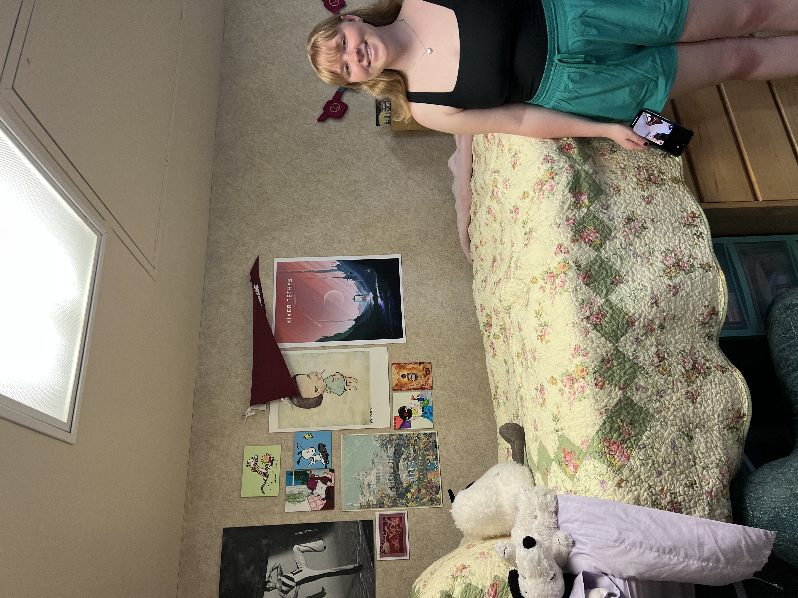Here's me moving into my very first college dorm with my Nara print hanging amongst my collections of posters!
I became more aware of Nara’s global fame over the next few years through his cult following on Pinterest (the best app ever created.) I stumbled across his work organically, and as a budding art appreciator, I kind of claimed him as mine. It’s like when you find a really good song on Spotify and it’s your favorite song for two weeks, then you come across a viral TikTok with the song as its audio and realize it has a substantial fanbase already. It’s embarrassing to admit how ignorant I was to his popularity, but since this discovery, I’ve found it to be a positive thing because I love talking to other people that enjoy his work.
Like any artist who even brushes the mainstream, there were people who wore Nara’s art on clothing or hung it on their walls without knowing who created it. I think that’s a natural phenomena—popular stores often seek out artists on the cusp of mainstream attention and create collaborative product lines, and the average person sees this cool design and wants to be closer to it. Like any other product in the store, there isn’t much of a reason to seek out the designer; imagine going to Target and finding a cool graphic tee, and being like “I must know who designed this Minecraft x Paw Patrol masterpiece!” After this exhibit, I continued to wear the t-shirt I bought from this exhibit without thinking too much about where it came from.
In the past few years, I’ve been trying to be more intentional about curiosity. If I really like something, I try to push myself to learn beyond the initial interest. Despite how much I’ve loved Nara the past few years, I knew very little about him, his artistic motivations, and the body of his work. As Nara has expressed, “The impression of my work is too strong, so most people tend to look only at the surface, leaving most of the background hidden” (Miyamura). Through this spotlight, I am trying to make my consumption of his art more meaningful, and I want to be able to understand and articulate what draws me to his work to become a better appreciator of art.
I’m going to fly through a quick bio and career review, with bias toward information I think is interesting, because I think it’s important context (if a little dry). Yoshitomo Nara, born in the Aomori prefecture of Japan in 1959, began his art education by pursuing a Master of Fine Arts at Aichi University of the Arts (Hayward Gallery). After graduating in 1987, Nara moved to Germany in 1988 to attend the Kunstakademie Dusseldorf. In the years that followed, Nara lived and worked in Cologne, studying under the painter A.R. Penck (“Nara: A Timeline 1988 – 2023”).
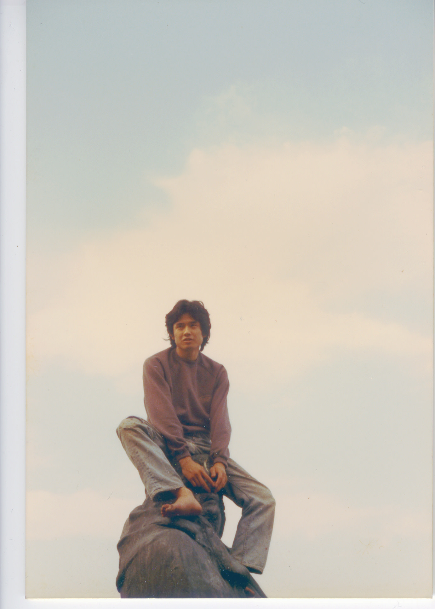Yoshitomo Nara, “Aichi Prefectural University of Fine Arts and Music”, 1981, via https://www.yoshitomonara.com/album/yn-album-1981-1
In the 1990s, Nara began to gain popularity as part of “Japan’s new pop” art scene (“Nara: A Timeline 1988 – 2023”), alongside such notable figures as Takashi Murakami, Makoto Aida, Taro Chiezo, and Mariko Mori. Though critics and viewers often cite manga and anime as a suspected inspiration for Nara’s works, as these mediums were inspirational for other artists in the new Japanese pop scene, Nara emphasizes that picture books were his biggest source of visual inspiration and imagination (Furukawa). The success of a published collection of Nara’s solo exhibition and other such victories led to Nara’s stint as a visiting professor at UCLA, a position for which he was nominated by Sir Paul McCartney! Also in this period, Nara designs the first of a slew of album covers for various musical groups. In this case, Nara creates the album art for “Happy Hour,” the work of a Japanese female band Shonen’s Knife, and “Pyromaniac” by Star Club (“Nara: A Timeline 1988 – 2023”).
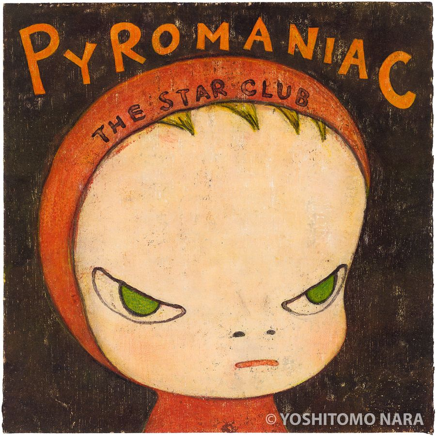Yoshitomo Nara, “Pyromaniac”, 1999, via https://www.yoshitomonara.org/ja/catalogue/YNF2453/
After moving back to Japan in 2000, Nara experimented with photography in 2002 by travelling to Afghanistan to create a spread for the first edition of the visual magazine FOIL. The goal of these images were to “focus on the daily lives of the local community, the physical and emotional connection between the people and the land, and how a sense of home is maintained in this war-torn region” (“Nara: A Timeline 1988 – 2023”).
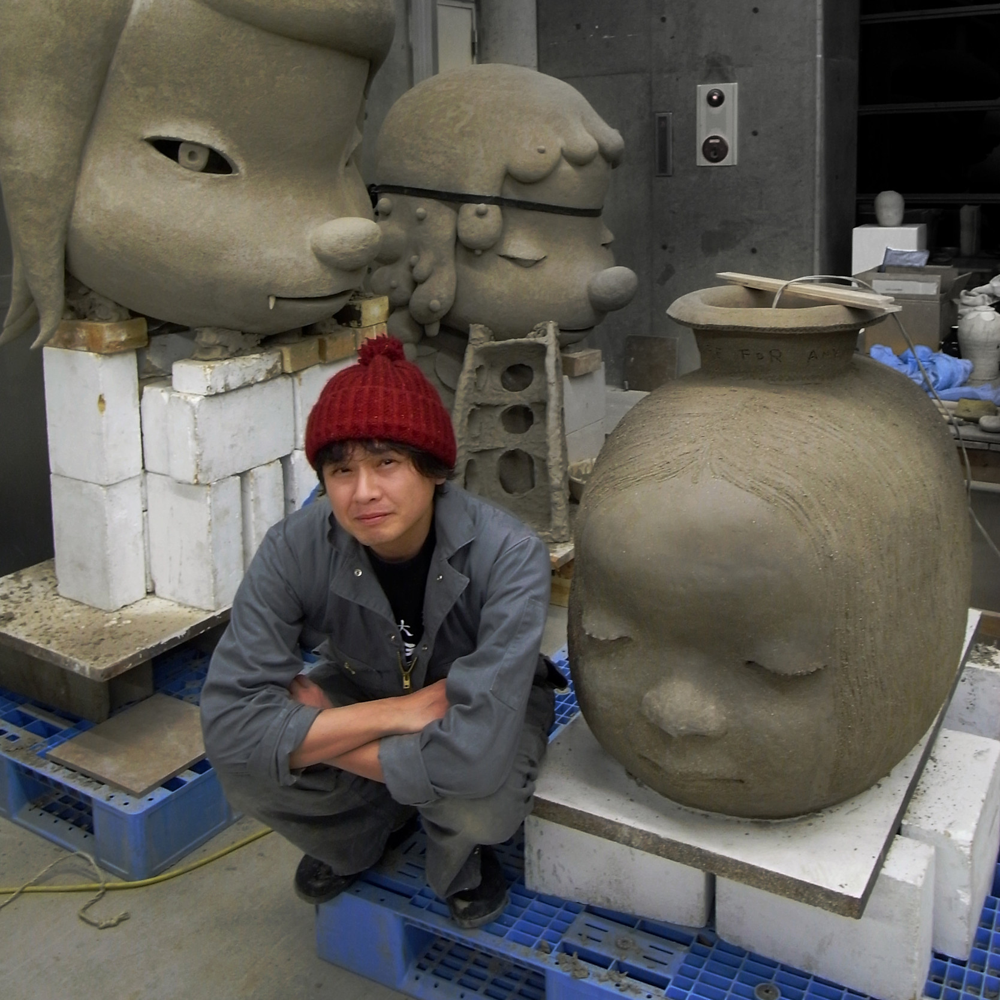Yoshitomo Nara, “Shigaraki”, 2010, via https://www.yoshitomonara.com/album/yn-album-2010-6
Several years later, Nara moves to a studio in Nasushiobra in the Togichi prefecture, where his studio has remained since. A significant moment in Nara’s and millions of other people’s lives occurred in 2011, with the Tōhoku earthquake, tsunami, and subsequent Fukushima nuclear accident. In response, Nara returned to Hirosaki and held a silent auction of two specially created paintings to fundraise for those affected (“Nara: A Timeline 1988 – 2023”).
Since then, Nara has established his private exhibition space, N’s YARD, and has continued to show his art around the world to increasingly eager audiences.
Heading into this spotlight, I was most curious about what Nara was trying to communicate with his art and what created that need to communicate in the first place. After consuming dozens of his interviews, I believe the three overarching themes that inform the majority of his works are music, childhood, and anti-war/pro-peace sentiment, with each theme bleeding into and informing the others. His childhood informed his love of music which informed his anti-war stance, with most other recombinations of this sentence being plausible. Nara confirms that the blend of childhood setting, constant music, and living in and post-wartime—and the odd dissonance these factors created--likely informs his artistic perspective in several different interviews: “I lived in the countryside, surrounded by apple orchards, but all I heard was American and British folk and rock music playing over the radio speakers. There was music in me first, then art… If I have a different perspective from the other kids, it comes from the news photographers who covered the Vietnam War without delay and from anti-war folk and rock music” (Rupp). This “rambling stream of memories” that flows when he encounters an old photograph or recalls a childhood memory, Nara ponders, “might be the source of [his imagination” (Kalvelyte).
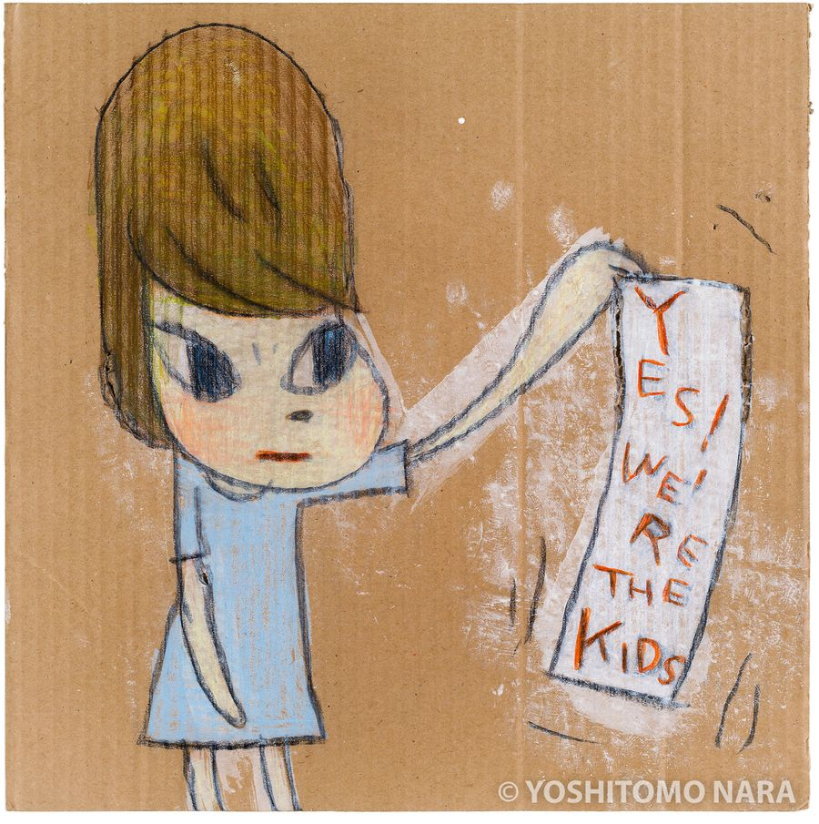Yoshitomo Nara, “We’re the Kids”, 2019, via https://www.yoshitomonara.org/ja/catalogue/YNF6712/
I encountered mentions of music as a powerful muse for Nara the most often of any of the themes while reading these interviews, and they struck me because I hadn’t made that connection in my casual consumption of his art. It is more than inspiration or stimulation to Nara: “When I’m working on drawings,” he says, “music just comes into my ear and goes straight out of my hand” (Marino). The theme of music seems to motivate the anti-war theme often, creating a close thematic relationship between the two in many Nara works: “I am drawn to music that creates a sense of unity, like the protest and anti-war songs of the civil rights movement, when everyone was looking in the same direction” (Miyamura). For example, Nara specifies the inspiration for his work STOP THE BOMBS as “the performance by John Lennon and Yoko Ono in which they planted two acorns in the east and west gardens of the Coventry Cathedral” (“Interview for the Guardian (London): Notes”). Furthermore, the concurrence of social and musical movements birthed and raised his perspective on conflict: “I believe that I was nurtured by the protest songs of the civil rights movement and the rock music of the anti-war movement. I was influenced a lot more by the hippie culture than by punk rock. Punk rock is about destroying everything, but hippy culture puts emphasis on community and nature as in, ‘Back to nature’ and ‘Living is not breathing but doing’ (both are words of Jean-Jacques Rousseau). But I can also say that punk rock taught the 17-year-old me not to think with my top-heavy head, but to feel with my body!” (“Interview for the Guardian (London): Notes”).
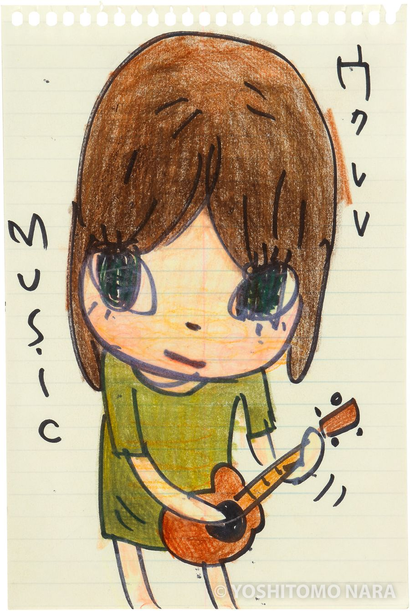Yoshitomo Nara, “Ukelele Girl”, 2019, via https://www.yoshitomonara.org/ja/catalogue/YNF6744/
Understanding Nara’s interwoven artistic relationship with nostalgic representations and inspiration of childhood, the power of music, and the importance of peace had a profound effect on my understanding of much of his art. Specifically, I feel my interpretation of “‘those big-headed girls’” to be even more meaningful (Marino).
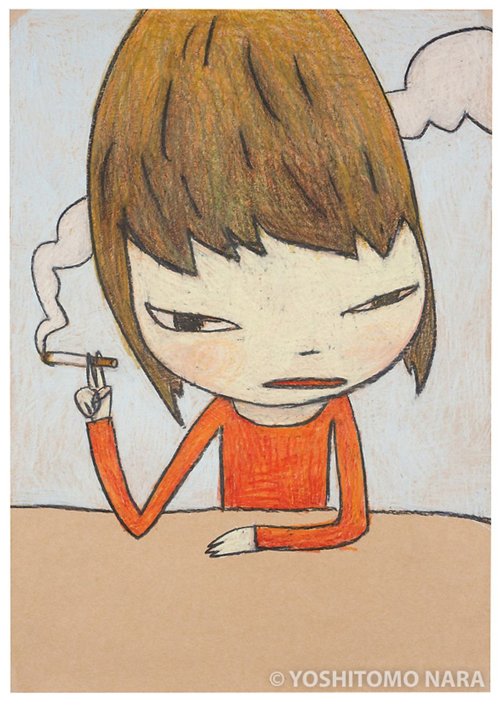Yoshitomo Nara, “Untitled (Now Smoking)”, 2007, via https://www.yoshitomonara.org/ja/catalogue/YNF4495/
My and many viewers’ first impression of Nara’s work are his cartoonish, attitude-filled little girls with galactic eyes and ballooned heads that stare right back at you when you peer up at them. These girls can traced back to A.R. Penck’s advice to Nara in 1988 to “paint on the canvas as if he is drawing” (“Nara: A Timeline 1988 – 2023”), a technique of bold, confident lines and comic proportions first immortalized in Nara’s 1992 The Girl with the Knife in her Hand, the first recognizable iteration of his girls and a monumental work in his career (Pace). Nara only began to create art with childhood in mind because his German surroundings brought him back mentally to his hometown: “For one reason or another, I ended up living in Germany for 12 years. I became literally 'alone' there. It strongly reminded me of the memory of my lonely childhood. I felt the city's (Düsseldorf) cold and darkness, just like my hometown, and the atmosphere there reinforced my tendency to seclude myself from the outer world. It helped me to remember the boy-me's feelings from back in my hometown, too. So I started talking with the 7- or 8-year-old boy-me in Aomori and the 28-year-old current-me in Germany, beyond the time-gap of 20 years, and the thousands of kilometers of distance between the countries. The result of the conversation was so obvious: what I drew changed drastically” (Furukawa).
As Nick Marino writes for the New York Times: “Rendered in acrylic with cartoonish proportions, these cherubic figures seemed, at first glance, indebted to both American twee and Japanese kawaii but were far from innocents. With their slit mouths and saucer eyes, their faces radiated exquisite ambivalence.”
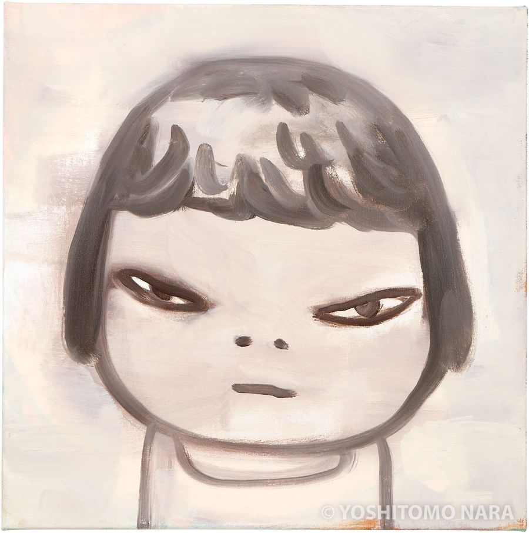Yoshitomo Nara, “Alone in the Wind”, 2018, via https://www.yoshitomonara.org/ja/catalogue/YNF6495/
I love that quote because it touches on the biggest question I had going into this spotlight: ambivalence. The unreadable expressions of these girls, to many, “convey the broad spectrum of human emotions” (“OCMA Yoshitomo Nara: I Don’t Want to Grow Up”). Over and over in this research, I saw people use this phrase, expanding the girls to enigmas of nebulous feeling, and maybe they’re right, maybe these girls feel whatever the viewer feels. I struggle with the ambivalence of these girls because it doesn’t necessarily feel like ambivalence or reflective, spectral emotions—to me, their expressions are pure autonomy. If your interpretation of the girl’s feelings changes, it’s because when you’re not looking, she’s disappearing into another world and living her own life. Whenever I look at the Nara poster in my room, it feels like we’re passing each other on the street, two separate, fully realized people who, with a glance, commiserate or celebrate or just make uncomfortable eye contact. These girls seem to not be bothered with remaining stationary for viewers’ ease because “Nara’s paintings enact a fleeting presence between the figure and the ground—a result of several layers of paint in subtly varied if subdued pigments that he applies throughout the painting process—in which the figure pops out of or floats in a space that appears to exist outside the constraints of time” (“Yoshitomo Nara”).
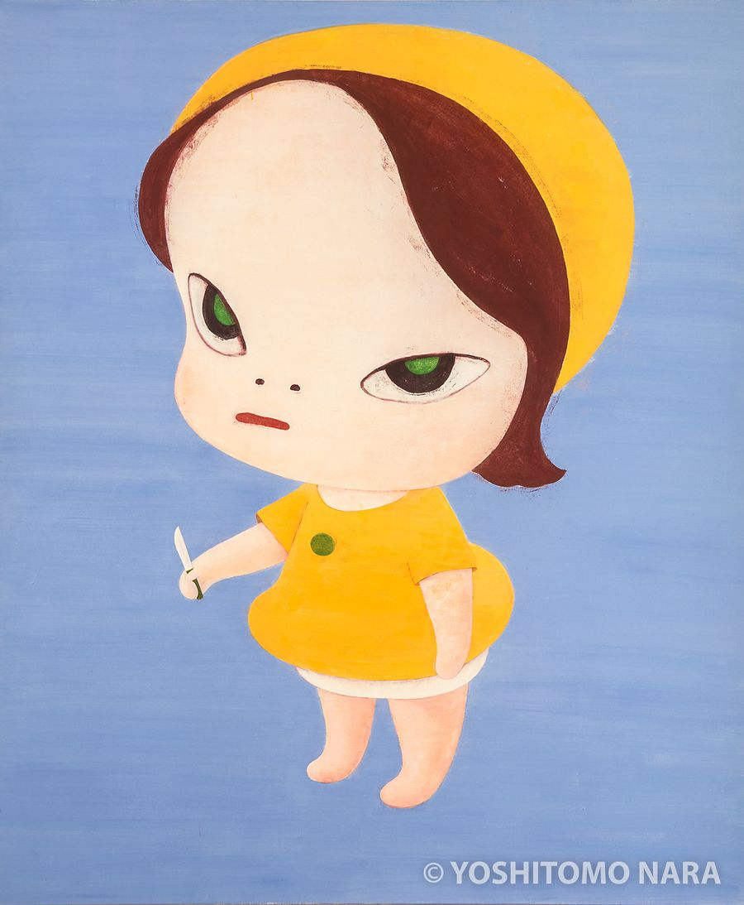Yoshitomo Nara, “Nice to See You Again”, 1996, via https://www.yoshitomonara.org/ja/catalogue/YNF1562/
When asked what drives these “Angry Girls,” Nara confessed, “I don't know. (laughs) If I could verbalize what drives them, I probably wouldn't paint such pictures” (Rupp). However, he follows up with the concession, “I think that the twelve years in Germany and the fact that I don't speak German as well as I would like and that I can't communicate my intentions to others in words have led to my pictorial expression” (Rupp). For as much as childhood is identified as a central Nara theme by critics and analysts, it is always presented as a theme of nostalgia, whimsy, innocence, playfulness, etc. I love this explanation for the sass that many of Nara’s girls carry because it represents a very real aspect of childhood—inability to communicate as well as you want, or to be understood fully. Adults constantly admit to chasing childlike feelings of giddiness or wonder, but the closest we get to our childhood emotions on a daily basis is probably childlike frustration that makes us want to stamp our feet. Maybe these girls are so beloved because we can understand them and they can understand us, so that cycle of childlike frustration is finally broken.
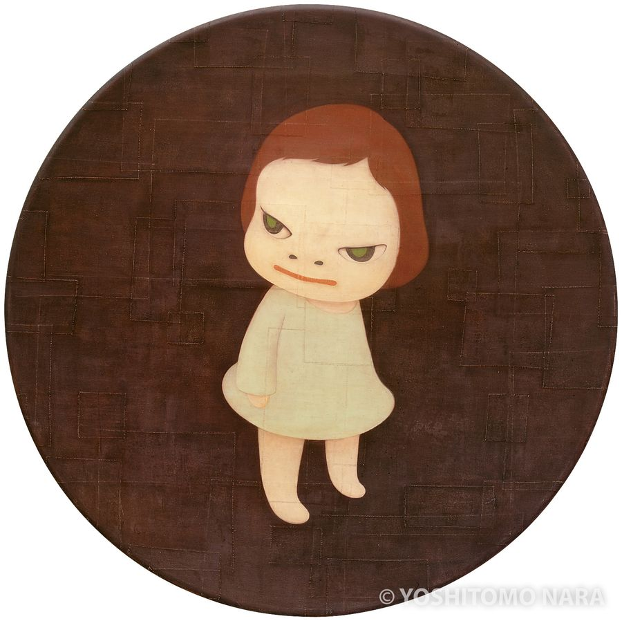Yoshitomo Nara, “MIA”, 2001, via http://yoshitomonara.org/ja/catalogue/YNF2945/
Aside from their youth and emotion being obvious links to the theme of childhood, these girls are often mediums of music and advocates of peace. As always, all three themes often appear and melt into one another in singular works, as to Nara, they are inextricably linked. To Nara, music is one of the things that links an adult to their childhood self, a being made special by their unreachability: when asked why childhood is so special, Nara replied, “Because you can never go back. The sensibilities and experiences that were nurtured during that time are unique. After that, we are made of common things, and there are few differences between us and others. We listen to similar music, read similar books, make similar friends, and so on” (Miyamura). The girls are often depicted playing instruments, conduits of both music and childhood: “Nara’s imps lived rich musical lives, too: They bashed drums and throttled microphone stands. And even when they weren’t literal punks (though they often were), they had a punk-rock attitude. They came off as gremlin Kewpies, often wielding a disturbing totem — a saw, a pistol, an unlit match — while wearing a baby-doll dress or pageboy haircut” (Marino).
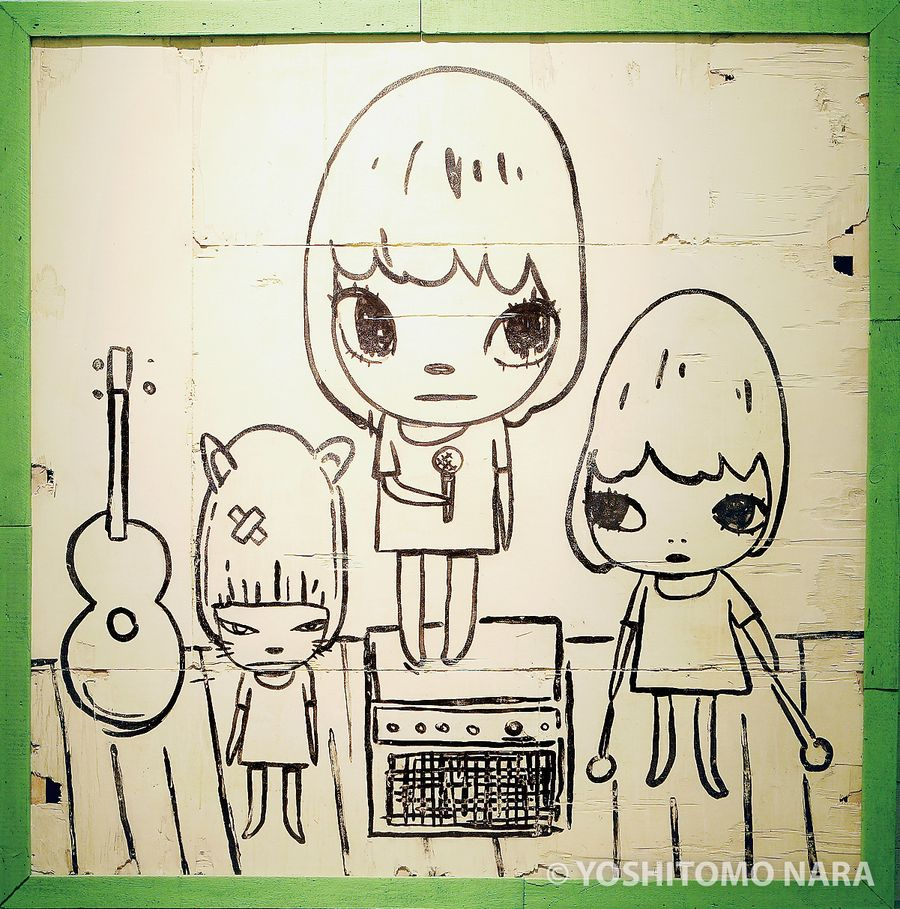Yoshitomo Nara, “Song from a Room (New Castle Version)”, 2008, via https://www.yoshitomonara.org/ja/catalogue/YNF5032/
Nara also includes words in some of these works as exclamations of the girls or slogans on their clothing, an explicit method of communicating with the viewer and establishing a setting of the senses: “I guess they condense and represent all the images I conceive of. When I write 'rock' in my work, I'm speaking to people who might share a part of the images that I have around the word 'rock.' I suppose people in my generation sometimes imagine those who love the same kind of rock music I love are the ones with whom I want to share my imagination underlying that word. It depends. A word is a kind of a key to a door which opens and leads to my world of imagination. I know it reaches some people, but I also know that it doesn't ring a bell with others” (Furukawa). As such, these “imps,” as Marino so perfectly called them, are conduits of Nara’s attitudes and little musical activists in their own right, telling the worthy viewer exactly what they should hear and feel if they are to gaze at the girls.
Yoshitomo Nara, “Little House”, 1984, via https://www.yoshitomonara.org/ja/catalogue/YNF36/
The themes of childhood, music, and peace carry beyond Nara’s paintings into his tactile world of sculpture and ceramics. The girls, though more often serene and angelic in sculpture than standoffish like their painted counterparts, emerge as the subjects absolutely exquisite ceramic sculptures and painted on spunky collections of pottery. Additionally, a frequent subject of Nara’s three-dimensional works is houses, an object which holds for Nara special significance as the form that “every memory [he] experienced as a child takes” (Miyamura). With these often-visited mental constructions, Nara “can create a city map of [his] memories” that remains with him forever: “If this city was made of things that have nothing to do with me, something would have been different, but a city born from within me will never change” (Miyamura). Thus, these houses Nara creates in the tangible world are mere representations of the intangible childhood trapped in his memory, bringing into being his youth of record collecting and musical inspiration (Marino). In rendering them in three dimensions, we get to experience his themes alongside with him, perhaps a reminder that, though we ourselves can’t return to childhood, we are still capable of creating it for others, namely our children, and that is a miracle in itself.
Yoshitomo Nara, “Girl with the Knife in Her Hand”, 1991, via https://www.yoshitomonara.org/ja/catalogue/YNF604/
Perhaps his most famous but certainly his most consequential work is the aforementioned The Girl with the Knife in her Hand, which Nara showed in 1992 at the Dusseldorf’s annual student show (“Nara: A Timeline 1988 – 2023”). This work would go on to shape his career as the motif of this mischievous, enigmatic girl launched him into stardom, becoming an iconic piece of contemporary art often used to represent Nara’s works.
Yoshitomo Nara, “Lollipop”, 1998, via https://www.yoshitomonara.org/ja/catalogue/YNF2098/
I can’t talk about my favorites of Nara’s works without mentioning Lollipop (1998). As I mentioned earlier, this is the poster has sat on every wall of every room I’ve lived in since I bought it, and it is now synonymous with both Nara and with home to me. This girl is my confidante and close personal friend and begrudging roommate, and I cherish the comfort she now brings me, even if her gaze is entirely apathetic.
Yoshitomo Nara, “Midnight Tears”, 2023, via https://www.yoshitomonara.org/ja/catalogue/YNF7346/
I adore the dreamy, hazy, almost Matisse-like in color paintings Nara does on occasion, with Hazy Humid Day as an example. However, my favorite of them all is Midnight Tears. I saw this work on the cover of a book while I was traveling in Japan this summer (where, incidentally, I spent a week in Nasushiobara with no clue that his studio was nearby.) This work knocked the wind out of me. Upon first glance, I though the colors were exquisite and the girl’s face enrapturing, but the final blow came when I noticed the quiet, luminous tear sneaking out of her left eye. That tear, and the tears that seem to be welling up in her cosmic eyes, had me stopping dead in my tracks, and I still can’t really explain it. This is one of my favorite paintings of all time and I have no way of articulating the way it makes me feel, just that my heart hurts when I look at it. She is the pinnacle of Nara’s gifts, in my opinion.
Yoshitomo Nara, “Harmless Kitty”, 1994, via https://www.yoshitomonara.org/ja/catalogue/YNF1102/
I got to see Harmless Kitty at the LACMA exhibit back in 2021. I could really just stare at it for hours, it makes me so happy. The layers of paint that stack and blend in classic Nara clouds are just beautiful to look at, and the child in the painting puts a smile on my face every time I see this painting. You can’t help but feel like, when you turn around, he’s going to sneak up behind you and try to pull your pants down or something. That rambunctiousness feels clearly playful, though. Just like a real cat, he seems to be standoffishly sizing you up, but with time, he might just come sit near you and ask to play games on your phone.
Yoshitomo Nara, “Fountain of Life”, 2001, via https://www.yoshitomonara.org/ja/catalogue/YNF5932/
One of my absolute favorite works of all time is Nara’s Fountain of Life. This is the kind of art that truly takes your breath away. The children’s faces are beautiful and still and meditative as tears roll from their eyes, tumbling down into a teacup where criers and cried mix into a solution of youth and sadness. Or maybe the children’s heads and their tears are floating up out of the teacup like steam personified. I am planning on visiting London at the end of the summer, where Nara is showing at Hayward Gallery, and this piece is at the top of my list to see.
Going into this research my goal was to understand the “why” of Nara’s art better. I felt that, by consuming the art uncritically, I was reducing it to a commodity that brightened my clothes and Pinterest boards. In this way, this spotlight has been enormously fruitful for me. I feel much closer to Nara’s art, and I feel that I can be a more responsible and meaningful viewer in the future. Of course I’m going to continue to pin Nara works to Pinterest boards willy nilly, is that a crime???
I also pondered the question of what makes Nara’s art so easy to consume passively. There are obvious answers: the works aren’t overtly offensive or politically specific, and their enigmatic designs are cool enough for young people to want to be nearer to, so as to redistribute some of the paintings’ coolness for themselves. I think this question lingered in my mind because it reminded me so much of Keith Haring and the similar progression his art had into the mainstream. Haring’s works were exciting but not too offensive, political in a vague way (until he took up the rage of the AIDS Epidemic), cool but not edgy. Though the two artists are not similar in most ways, their art is easy to consume without context and thus easily commodified. As such, I encourage anyone reading this to question where and why the art the art on their Urban Outfitters graphic tees comes from. Don’t just pin that cool picture to your Pinterest board, try to find its origin! Investigate! Don’t let art become a passive product, and don’t let the consumption of art become a one-way transaction. If the art calls to you, call back! Give back to the art your time and focus in exchange for the beauty and emotion it gave you. Art should be reciprocal and humans should be curious.